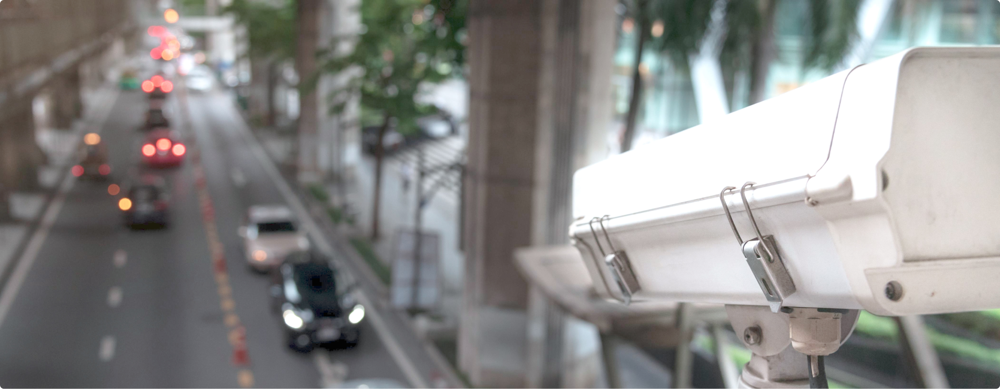
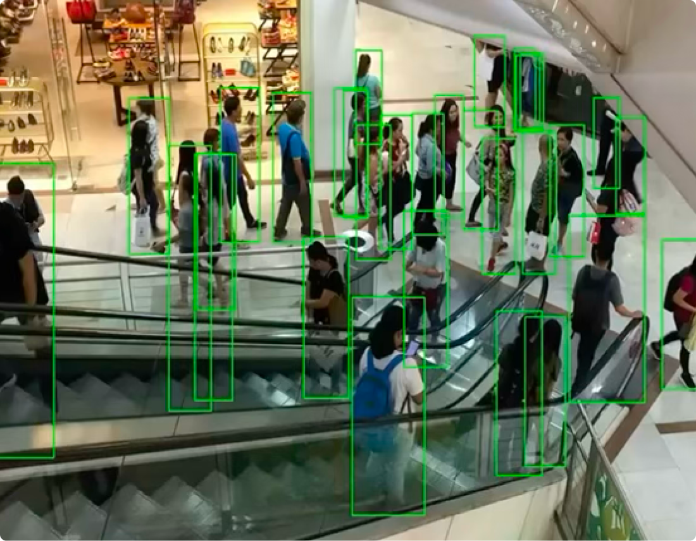

더 안전하고 스마트한 공간을 위한 AI 영상 인텔리전스
— 지금 보유한 장비만으로 구현됩니다.

SmartOkO는 기존 CCTV를 실시간 감지 및 자동화 플랫폼으로 전환합니다.사람과 행동을 인식하는 것부터 에너지 및 안전 최적화까지,기기를 하나도 교체하지 않고도 완벽하게 작동하는 플러그 앤 플레이 AI 솔루션입니다.
Our Story
대부분의 건물은 영상 데이터로 가득하지만, 실시간 인사이트로 전환할 도구는 부족합니다.
기존 솔루션은 고가의 하드웨어, 서버 설치, 수 주간의 구축 기간을 요구합니다.
Our Solution
SmartOkO는 기존 IP 기반 CCTV에 직접 연결되며, 교체가 필요하지 않습니다.
기기 내 탑재된 AI 엔진으로 화재, 낙상, 연기, 헬멧 착용 여부를 감지합니다.
온프레미스 하드웨어 또는 VSaaS(클라우드 서비스)로 제공되어, 클라우드와 폐쇄망 모두를 지원합니다.

Our Vision
단일 건물부터 리테일 체인, 물류센터, 스마트시티까지 — 고객의 성장에 맞춰 확장합니다.
우리는 감지, 분석, 최적화를 제공하는 플러그 앤 플레이 AI 영상 플랫폼의 글로벌 기준을 만들어갑니다.
파트너 및 고객사